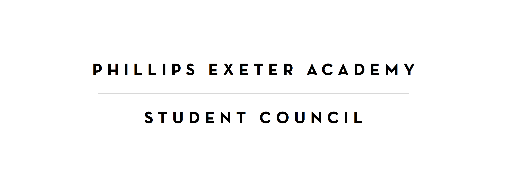

New Student Council Website by Jackson Parell
Posted on 07/28/16

Jackson Parell, secretary, has created a new website to give the Exeter community a new way to access Student council information.
The goal of this website is to centralize and publicize student council’s activities and to provide an online platform for student input. Therefore, included on this website are eight crucial features: Updates, About, Committees, Constitution, Student Information, Minutes, Feedback Center and Motions.
Updates – Learn about Student Council Events, News, and Legislation.
Committees – Check out committee pages to see their purpose and recent activities. Also, learn more about the committee heads and how to get in touch with them.
About – view a list of all current elected officials and the positions they hold.
Constitution – Download or view an online copy of the student council constitution.
Student Information – Find out more about important contacts at the school, student resources, and other useful information.
Stuco Documents –Download the minutes and other important legislation from each student council meeting to learn about our everyday activities.
Feedback Center – Provide feedback to different school entities like Grill, Dhall, and the Health Center
Motions – submit a motion to the motion box, which will be reviewed on the student council floor.
It is the Exective board’s hope that this website will be the beginning of a process to create transparency in the Phillips Exeter Academy Student Council while also, giving students a greater voice in the Exeter community.